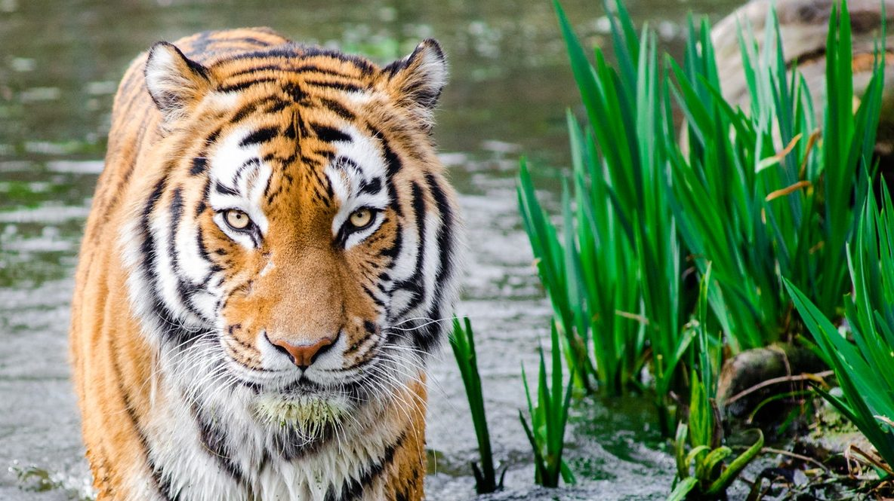
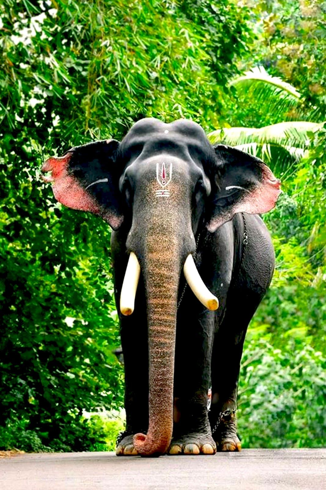
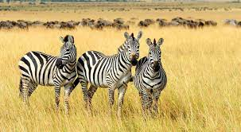
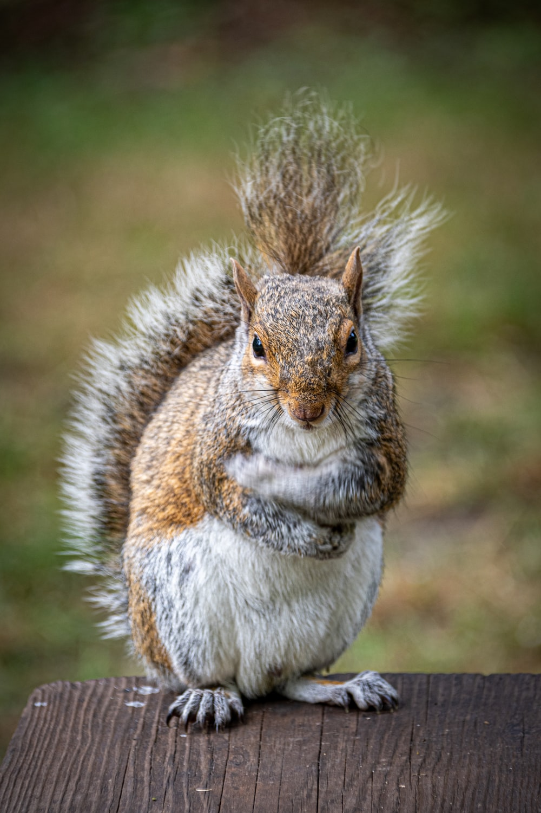

Wild Life


The tiger (Panthera tigris) is the largest living cat species and a member of the genus Panthera. It is most recognisable for its dark vertical stripes on orange fur with a white underside. An apex predator, it primarily preys on ungulates such as deer and wild boar. It is territorial and generally a solitary but social predator, requiring large contiguous areas of habitat, which support its requirements for prey and rearing of its offspring. Tiger cubs stay with their mother for about two years, then become independent and leave their mother's home range to establish their own. Tiger is India's National Animal.

Elephants are the largest existing land animals. Three living species are currently recognised: the African bush elephant, the African forest elephant, and the Asian elephant. They are an informal grouping within the proboscidean family Elephantidae. Elephantidae is the only surviving family of proboscideans; extinct members include the mastodons. Elephantidae also contains several extinct groups, including the mammoths and straight-tusked elephants. African elephants have larger ears and concave backs, whereas Asian elephants have smaller ears, and convex or level backs. The distinctive features of all elephants include a long proboscis called a trunk, tusks, large ear flaps, massive legs, and tough but sensitive skin.

Zebras are African equines with distinctive black-and-white striped coats. There are three living species: the Grévy's zebra, plains zebra, and the mountain zebra. Zebras share the genus Equus with horses and asses, the three groups being the only living members of the family Equidae. Zebra stripes come in different patterns, unique to each individual. Several theories have been proposed for the function of these stripes, with most evidence supporting them as a deterrent for biting flies. Zebras inhabit eastern and southern Africa and can be found in a variety of habitats such as savannahs, grasslands, woodlands, shrublands, and mountainous areas.

Squirrels are members of the family Sciuridae, a family that includes small or medium-size rodents. The squirrel family includes tree squirrels, ground squirrels (including chipmunks and prairie dogs, among others), and flying squirrels. Squirrels are indigenous to the Americas, Eurasia, and Africa, and were introduced by humans to Australia. The earliest known fossilized squirrels date from the Eocene epoch, and among other living rodent families, the squirrels are most closely related to the mountain beaver and to the dormice.

The lion (Panthera leo) is a large cat of the genus Panthera native to Africa and India. It has a muscular, broad-chested body, short, rounded head, round ears, and a hairy tuft at the end of its tail. It is sexually dimorphic; adult male lions are larger than females and have a prominent mane. It is a social species, forming groups called prides. A lion's pride consists of a few adult males, related females, and cubs. Groups of female lions usually hunt together, preying mostly on large ungulates. The lion is an apex and keystone predator; although some lions scavenge when opportunities occur and have been known to hunt humans, the species typically does not actively seek out and prey on humans.